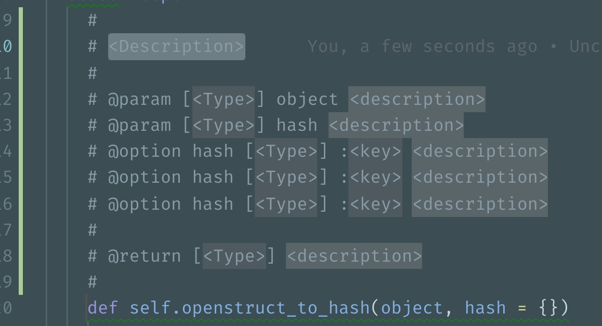

0x01 环境搭建
使用 RVM 安装 Ruby
OS X 自带的 Ruby 环境很不友好，版本老旧，安装的目录不正确，导致安装 gem 还需要使用 sudo 权限。所以~~强迫~~推荐每个人都把 Ruby 用正确的方式重新安装一把
安装 RVM
RVM 全称 Ruby Version Manager，顾名思义它可以管理 Ruby 版本，安装它的方式很简单，
1 | \curl -sSL https://get.rvm.io | bash -s stable |
安装 Ruby
为了让 RVM 生效，需要切换到新的 shell 窗口。然后开始安装 Ruby。
1 2 3 4 5 6 7 8 | # 这个版本不作强制要求，理论上 2.4+ 的都没有问题 rvm install 2.4.1 # 把刚才安装的版本设置为默认版本 rvm --default use 2.4.1 # 查看当前 Ruby 版本，should output 2.4.1 ruby -v |
安装配置 VSCode
安装
VSCode 是非常现代且优秀的 editor，使用简单，扩展丰富，~~强迫~~希望你也安装
配置
安装 code 命令
VSCode 自带一条 code 的命令，在 terminal 里输入 code . 即可使用 VSCode 打开当前目录，很方便。
安装的方式不复杂，
点击 View - Command Palette ，输入 shell command，选中 install code command in PATH

安装 ruby-rubocop 插件
它是一个 Ruby 的 lint 工具，背后集成了 rubocop，能在每次保存文件的时候自动 lint 整个文件。对于有 lint 错误的部分会有波浪线的提示，强迫症患者必备

它还提供了自动修正错误的功能，可以不费吹灰之力对文件产生的基本 lint 错误作出自动修正，简直是懒人的福音，所以还在等什么，赶紧安装吧（
安装 code runner 插件
作用是使用 cmd + r 可以直接运行当前 ruby 文件，不需要 editor 和 terminal 两头跑
安装完成后，需要在配置中把 code-runner.executorMap.ruby 改成 which ruby 的路径

安装 YARD Documenter 插件

写文档专用，输入 Document with YARD 命令即可为 Ruby 中的类，方法进行注释